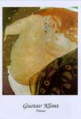
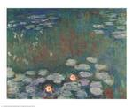
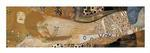
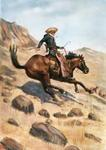
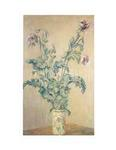

|
Artist: Thomas Baker ( - )
Artworks in Museum Collections: (40)
Click the artwork titles below to see actual examples of artwork or works of art relevant to works by Thomas Baker.
Fine Arts Museum of San Francisco
-
Thomas Baker, A Street Scene, 1849
Fine Arts Museum of San Francisco
-
Thomas Rowlandson, The Cries of London: Rhubarb; Baker; Strawberries, 18th - 19th century
J. Paul Getty Museum
-
Portrait of Josephine Baker
Fine Arts Museum of San Francisco
-
Josiah Baker, Time and art, 1795
Fine Arts Museum of San Francisco
-
Anonymous , Baker, circa 1800
-
Benjamin West - Portrait of Diana Mary Baker 1766 oil on canvas Minneapolis Institute of Arts American
Fine Arts Museum of San Francisco
-
John Baker, Napoleon Crossing The Alps, 19th century
Fine Arts Museum of San Francisco
-
John Baker, Washington Crossing The Delaware, 19th century
Fine Arts Museum of San Francisco
-
Adriaen van Ostade, The Baker Sounding His Horn, 17th century
Fine Arts Museum of San Francisco
-
Ernest Haskell, Mary Baker Eddy, ca. early 20th century
Fine Arts Museum of San Francisco
-
George Holbrook Baker, Gold Bar Gravel Mining Company, 1856
Fine Arts Museum of San Francisco
-
William Baker Faville, Sand Dunes, 19th - 20th century
Fine Arts Museum of San Francisco
-
Giovanni Battista Volpato, Il Fornajo(the Baker), after F. Maggiotto, 18th century
Fine Arts Museum of San Francisco
-
Richard Fiscus, Baker Beach, from Golden Gate Suite, 1976
Fine Arts Museum of San Francisco
-
George Holbrook Baker, A View Of The Town, And Harbour Of San Francisco, mid 19th century
Fine Arts Museum of San Francisco
-
George Holbrook Baker, Cliff House and Seal Rock, circa 1880
Fine Arts Museum of San Francisco
-
James Baker Pyne, Title page - The English Lake District , by J.B. Pyne, 1853
Fine Arts Museum of San Francisco
-
W. D. Baker, The Children*s Pleasure Book (Philadelphia: Lippincott, Grambo & Co., [ca.1850]), ca. 1850
Fine Arts Museum of San Francisco
-
Ernest Hemlin Baker, For Every Fighter A Woman Worker - World War I poster, circa 1917 - 1918
J. Paul Getty Museum
-
Joseph in Prison Interpreting
Fine Arts Museum of San Francisco
-
George Holbrook Baker, Fort Yuma, Colorado River, California, 19th century
Fine Arts Museum of San Francisco
-
William Theophilus Brown, Baker"s Beach, number 18 of the portfolio Twenty Etchings by Theophilus Brown, 1984
Fine Arts Museum of San Francisco
-
James Baker Pyne, Tail piece vignette for the introduction in the book Lake Scenery of England by J.B. Pyne (London: Day & Son, [1859]) , 1859
Museum of Fine Arts
-
John Appleton Brown, American, 1844-1902 A Showery May Morning 1890s Oil on canvas 79.06 x
Museum of Fine Arts
-
Gustave Doré, French, 1832-1883 Summer about 1860-70 Oil on canvas 266.4 x 200.1 cm (104
Fine Arts Museum of San Francisco
-
Richard Fiscus, portfolio cover for Golden Gate Suite (A suite of six serigraphs: Point Lobos, Land"s End, Sea Cliff, Baker Beach, The Presidio, Fort Point), 1976
The Metropolitan Museum of Art
-
The Baker"s Cart, 1656 Jean Michelin (French, born about 1616, died 1670)Oil on canvas; 38
-
George Baker - Evergreens 1920 oil on canvas Richmond Art Museum American
-
George Augustus Baker, Jr. - Portrait of Children 1853 oil on canvas Los Angeles County Museum of Art American
-
Ellen Kendall Baker - The Young Artist 1885 oil on canvas The Detroit Institute of Art American
Museum of Fine Arts
-
Embroidered by Elizabeth Baker, American (New England) Needlepoint picture USA, New England, 1773 Linen plain
Museum of Fine Arts
-
Wedgwood Factory, Staffordshire, England Tea canister England, about 1785-90 Colored stoneware (jasperware) 13.9 cm (5
Museum of Fine Arts
-
Wedgwood Factory, Staffordshire, England Tea canister England, about 1765 Glazed earthenware (creamware) 13.3 x 7.2
Museum of Fine Arts
-
William Birch McMurtie, American, 1816-1872 Mount Baker From Puget Sound 1849-53 Watercolor on paper Sheet:
Museum of Fine Arts
-
Thomas Buchanan Read, American, 1822-1872 Sheridan"s Ride 1871 Oil on canvas 73.34 x 60.32 cm
Museum of Fine Arts
-
William Birch McMurtie, American, 1816-1872 Mount Baker, Port Townsend, Puget Sound July 24, 1852 Graphite
Museum of Fine Arts
-
Unidentified artist, Russian or Balkan, 4th quarter 17th century Virgin and Child Enthroned with Two
Museum of Fine Arts
-
James Dow, American, Born in 1942 Baker County Courthouse, Newton, Georgia 1976, printed September 1983
-
Martha Susan Baker - Twilight no. 2 1898 1898 watercolor Smithsonian American Art Museum American
Museum of Fine Arts
-
Obadiah Rich, 1809-1888 Sauceboat (one of a pair) United States, Massachusetts, (Boston), 1830-40 wood 13
Artnews Articles and Exhibition Information: (30)
Click on any of the links below to read about artnews or exhibitions related to Baker
US Art Gallery: Official BB Project: Bridget Baker
Briget Baker is a South African artist who has installed work across her homeland as well as at the Museum of African Art in New York. IMAGE:
Bridget Baker
Signing Leaves...
Indianapolis Museum of Art: James Baker Pyne
Pyne is remembered as one of the best of the modern school of landscape painters and second only to J.M.W. Turner in his ability to paint expansive landscapes in brilliant sunshine or filtered sunshine through haze and mist....
Sonoma State University Art Gallery: Call for Artists: Across the Generations, An Homage to Virginia Woolf and the Art of Bloomsbury
This show will be juried and curated by Elisa Baker, J.J. Wilson, Diane F. Gillespie. Elisa Baker is the Exhibits Coordinator for the Cultural Arts Council of Sonoma County and J.J. Wilson and Diane Gillespie are Virginia Woolf Senior Scholars and...
Winnipeg Art Gallery: Holman: Forty Years of Graphic Art
The carvers articulated rigorous aesthetic standards and
expressed admiration for accomplished works that showed
originality, novelty, and a distinct personal
style-echoing elements that contribute to our
understanding of great art as produced...
3RD i GALLERY: InterActive Art Works
...
University of Richmond Museums, Marsh Gallery: Power of Thought:The Prints of Jessie Oonark
Jessie Oonark
Born in the Back River region of the Canadian Central Arctic, Oonark led a traditional semi-nomadic existence until the late 1950s
when the depletion of caribou (a major food source) forced her and her peers to move permanentl...
Glema Mahr Center for the Arts, Madisonville Community College: Reviving Renaissance: Paintings by Tom Kennedy
Tom has produced award-winning work as an illustrator, graphic designer and
artist since 1976. His work has been commissioned by major corporations,
public institutions and individuals for its sensitive portraiture and montage
work involvin...
Bonhams: Darren Baker: An Exhibition of Paintings and Drawings
'Since graduating from Bradford college in 98, Darren has worked tirelessly to get a foothold in the art world. He was fortunate to receive some prestigious commissions and exhibition opportunities since leaving college. However it was not until D...
Madison Museum of Contemporary Art: Art on Site: Madison Museum of Contemporary Art at Olbrich Botanical Gardens
In addition, students from Malcolm Shabazz City High School will work with participating artists to create a summer-long series of mowed designs in Olbrich's Great Lawn.
Art on Site is the museumís first group exhibition focusing on site-spec...
Joao Ferreira Fine Art: Change no Sorry
Featured works in the exhibition are by Sue Williamson, Mark Hipper, Bridgit Baker (currently in residence at Stellenbosch University), Helen Johnson, Kim Stern, Steven
Cohen, William Kentridge, Nicola Jackson, Eris Silke Ro...
Textile Museum of Canada: Irene Avaalaaqiaq: Myth and Reality
Avaalaaqiaq is deeply committed to preserving her heritage and making it accessible to an international audience. Much of her work focuses on Inuit legends passed along by her grandmother, as well as a world view derived from oral tradition and ex...
Carnegie Museum of Art: Art Nouveau Tiles: Fantastic Flowers and Other Forms
Art Nouveau, literally new art, flourished in Europe and America in the decades from 1890 to 1914 and is
considered the first modern style in the decorative arts to incorporate themes from nature. In its day, the Art
...
BROOK THEATRE: Legacy of the 20th Century
Aptly taking place at Chatham, England, literally just across the River
Thames from the Greenwich Millennium Dome, the Medway Millennium Dome will
be constructed from soup cans with the roof of the Dome made from second -
hand clothes - all r...
ASU Art Museum: nooks and crannies: Installations in Non-Traditional Settings
Artists include: Julia Alexander, Matt Baker,
Jill Betterly, Ryan Breen, Jeremy Briddell,
Colin Chillag, Cyndi Coon, CUP (Helene Renard and
Terry Surjan), Angela Ellsworth, Jon Haddock,
Tara Kozuback, Sloane McFarland, Ryan McNamara,
Jill McV...
Mobile Museum of Art: Women of Our Time: 75 Women Challenged and Changed the US
“This collection of photographs features women whose lives redefined America,” said Marc Pachter, director of the National Portrait Gallery.
“Women of Our Time” includes photographs of activists and artists, designers and dancers, politici...
Blue Oyster Art Gallery and Project Space: Animality: Cultural Constructions of the Animal
From the glass menageries of animals housed in the
Hubrecht Laboratory, Netherlands, and the Tornblad
Institute, Sweden, comes Dublin artist Karl Grimes
photographic series Future Nature. Captured in a
state of grace, the foetal images invite...
Albury Regional Art Gallery: Call for Artists: National Photographic Purchase Award
THE NATIONAL PHOTOGRAPHIC PURCHASE AWARD
The National Photographic Purchase Award began in 1983 after the Committee
of Management decided to make the collection of Australian Photography a
major part of the collection
Gael Newton and Helen ...
Vancouver Art Gallery: Drawing the World: Masters to Hipsters
Drawing the World: Masters to Hipsters incorporates four distinct historical collections and a contemporary exhibition:
· Italian Drawings from the National Gallery of Canada;
· Power and Desire: South Asian Paintings from ...
Ohio Art League: The View From Dione: A Collaboration with the Perkins Observatory
From the Chauvet Cave Paintings of 30,000 years ago to the prehistoric zodiac created in the Nasca Lines in Peru, science and art have been forever linked by those who seek to discover. Throughout the recorded history of man, art has been used to ...
Oakland Museum of Califoria: Secret World of the Forbidden City: Splendors from China's Imperial Palace
Visitors to this exhibition will enter a world of ceremony and ritual, birth and death, banquets and processions, all revolving around the Emperor, who served as Supreme Authority in an unquestionable family hierarchy and sanctified power structur...
Museum of Fine Arts, Houston: Americanos: Latino Life in the United States
The exhibition is a fascinating self-portrait of Latino America. The photographers focused on themes of
family, community, work, spiritual life, recreation, and the arts. Some of the people cho...
Lola Gallery: Swank: Co-Curated by Hilary Hedden, Elwyn Crawford and Louise Rice
These framed blotter sheets, some dating back as far as the early 70s, are festooned with incredibly unique psychedelic and pop culture images that are a testament to the subculture of LSD, from Alice in Wonderland to irresistible Piggy featured a...
Judah L. Magnes Museum: Richard Nagler Photography Competition for 2000
They began
the competition in order to support and address the needs of
the many photographers of merit, worldwide, for whom they
...
National Portrait Gallery: Return to Life: A New Look at the Portrait Bust
Including work by well-known sculptors
such as Henri Gaudier-Brzeska, Sir Jacob Epstein and Sir Francis
Chantrey, as well as work by less familiar practitioners including
Samuel Joseph and Kathleen Scott, the exhibition displa...
Bell-Roberts Art Gallery: 10 Years 100 Artists: Art in a Democratic South Africa
The new premises at 89 Bree Street (between Shortmarket and Hout Streets) was originally built in 1752. The space is elegant and spacious , with a touch of old world charm about it. The gallery will now be situated on two floors and a roof top gar...
Helsinski City Art Museum: William Blake
Born in London in 1757, William Blake's thinking was much influenced by the French Revolution, which was generally
regarded as a sign of the dawning of a new age in Europe. Blake saw himself primarily as a prophet, for whom art was a
way o...
Australian Centre for Contemporary Art: RENT
Rent describes the temporary relation many people have to the things
around them. That is, we do not own them and we do not create or produce
them from scratch, though we do use and adapt them. It also applies t...
Henry Moore Institute: Hounds in Leash: The Dog in 18th and 19th Century Sculpture
This period is a particularly interesting one in the development of the dog as a domesticated pet - a time when dogs’ intelligence and obedience were increasingly acknowledged, and there was growing concern about ill treatment and cruelty. This r...
South African National Gallery: SOFTSERVE
It will be a night in which the gallery will be between exhibitions, where
the walls in two of the main galleries will be bare, offering artists free
creative reign and great possibility. Expect anything from an interactive
domestic bar and deejay...
Homeport: Installations that Have Travelled to Havana, Rotterdam, Shanghai, Mumbai and Jakarta to be Displayed
Homeport Cape Town kicks off with a special organized afternoon centring around the Martime Musuem,
next to the Aquarium. A water ferry will take visitors from one location to a...
Further Artwork and Information:
THOMAS BAKER - HOME
Wikipedia: Thomas Baker
Person Tearsheet
Authors in the July/August 2003 Issue of D-Lib Magazine
Joffre Thomas BAKER
Dr. Thomas N. Baker
Thomas Baker
Thomas Nelson Baker, Jr.: Chemist
Thomas Baker - Artist Painting Prices, Art Appraisal, Artist Paintings [AskART.com]
www.gmd.de/People/Thomas.Baker
Search the Art History Database for artists, titles, media, year, and other indepth information:
|
|
|
|

Gustav Klimt
Danae
Our Supplier's price: $31.00

Claude Monet
Water Lilies
Our Supplier's price: $13.00

Gustav Klimt
Sea Serpents I
Our Supplier's price: $52.00

Frederic Remington
Cowboy on a Horse
Our Supplier's price: $45.00

Claude Monet
Purple Poppies
Our Supplier's price: $10.00
|